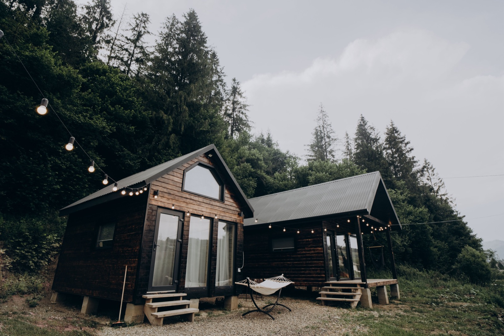

Tiny Homes
Whole homes under about 40m², on wheels or on a foundation. Cheap to build and run, and a natural fit for the tropics as a casita, rental, or first structure on your land. The catch is legality.

A tiny home is exactly what it sounds like: a complete, self-contained dwelling in a very small footprint, usually under about 40m² (400 sq ft), sometimes far less. Some sit on trailers and stay mobile. Most, for permanent living, sit on a normal foundation. The draw is threefold. Low build cost, low running cost, and a small footprint on the land, which makes a tiny home one of the smartest ways to get a livable, permitted structure onto a tropical lot quickly.
Two kinds of tiny home
There are two families. Tiny houses on wheels are built on a road-legal trailer chassis, which keeps them classified as vehicles/RVs (dodging some building codes but complicating permanent placement and utilities). Tiny homes on foundations are just small conventional houses, built in block, wood, or any method on this guide, and are the route to a genuinely permanent, financeable, insurable dwelling. Both lean hard on clever space design: lofts, fold-away furniture, and built-ins.
The price
Because they're small, the total cost is low even when the per-square-metre cost isn't: a well-built tiny home commonly lands $15,000–60,000 depending on finish and whether you DIY. In build terms that's often $1,000–2,500/m², small spaces pack in expensive kitchens and baths, but the tiny footprint keeps the check small. (Approximate; DIY vs. turnkey and finish level swing it widely.)
Strengths and weaknesses
| Factor | Rating | Notes |
|---|---|---|
| Total cost | 🟢 | Low absolute cost, small footprint |
| Cost per m² | 🟡 | High per m², kitchens/baths are pricey |
| Running cost | 🟢 | Cheap to cool, power, and maintain |
| Land use | 🟢 | Tiny footprint; great casita or first build |
| Heat/climate fit | 🟢 | Easy to cool, cross-ventilate, shade |
| Space | 🔴 | Small, tight for families or long stays |
| On wheels vs foundation | 🟡 | Wheels dodge codes but complicate permanence |
| Permitting/finance | 🟡 | Foundation = normal; wheels = grey area |
How hard is it to build?
A tiny home on a foundation is one of the most buildable projects there is. It's just a small house, so any local builder can do it in the regional concrete or wood method, and the small size means a short, cheap build. The real questions aren't structural, they're legal: minimum-size rules, whether a tiny home counts as a permitted dwelling, and how utilities connect. In Panama and Costa Rica, a small permitted casita is a well-trodden path, and many people build one first and live in it while the main house goes up, so a tiny home on a foundation is a genuinely smart tropical move. A tiny house on wheels is trickier to place permanently and connect to services: great for flexibility, awkward for a forever home.
Thinking about building in Panama or Costa Rica?
SORA is a fixed-price design-build platform for foreign buyers. We build in reinforced concrete by default, and we can talk you through when an alternative method actually makes sense for the tropics. Play with cost live in the 3D configurator.
See real 2026 build costs →Frequently asked questions
How much does a tiny home cost to build?
Most tiny homes cost $15,000–60,000 depending on finish and whether you build it yourself. The per-square-metre cost is high (small spaces still need a full kitchen and bathroom), but the tiny footprint keeps the total low compared with a full-size house.
Is a tiny home a good first build on raw land?
Very, a small permitted casita is one of the fastest, cheapest ways to get a livable, serviceable structure onto a lot, and many owners live in it while building or saving for the main house. On a foundation it's just a small conventional home, so local builders handle it easily.
Tiny home on wheels or on a foundation, which is better in the tropics?
For permanent tropical living, a foundation is usually better: it's a normal permitted dwelling that's easy to service, insure, and finance. Wheels give you mobility and can sidestep some codes, but placing one permanently and connecting utilities is more complicated.
Sources & verification
Figures in this guide were checked against primary and authoritative sources on 27 July 2026. Immigration, tax, and cost figures change — always confirm the current rules with the official body or a licensed professional before acting.